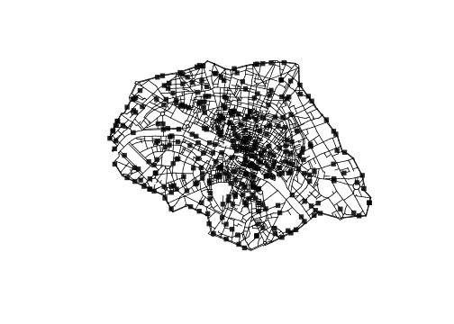
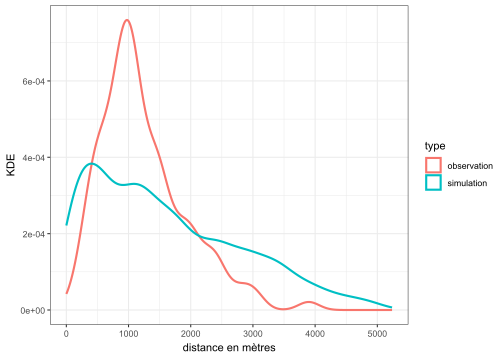
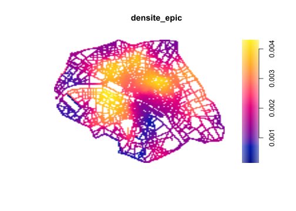
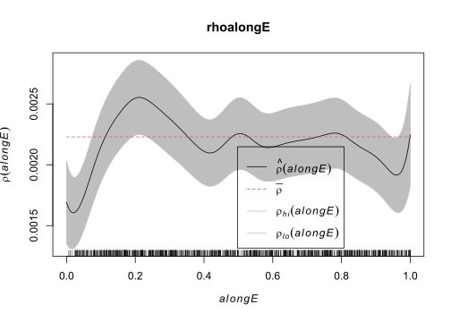

L’analyse d’un semis de points sur un réseau désigne un ensemble de méthodes statistiques permettant de caractériser des événements ponctuels dans le temps et dans l’espace prenant place sur un réseau spatial planaire. Deux des sujets les plus traités dans la bibliographie sont les accidents de la circulation et les actes criminels commis dans l’espace public. Il est possible d’imaginer étudier d’autres thématiques plus ou moins ponctuelles dans le temps, qu’il s’agisse de l’offre commerciale dans un espace donné, du collage militant ou publicitaire, de la présence d’équipements dans l’espace public (bancs, toilettes), de présence de biotopes le long de cours d’eau, etc. Trois grands types de question sont généralement posés à ces données : (1) les points sont-ils significativement proches (ou éloignés) les uns des autres (étude du voisinage) ? (2) Existe-t-il des lieux où la concentration des points est notable (hot spots) ? (3) Quel modèle statistique est susceptible d’expliquer la géographie de ce semis de points ? Ces trois questions sont abordées à l’aide du package R spatstat.linnet de la famille spatstat.
Mots clés
semis de points, réseau spatial, analyse spatiale
nocite: ‘’
Définitions et questions de recherche
L’analyse d’un semis de points sur un réseau désigne un ensemble de méthodes statistiques permettant de caractériser des événements ponctuels dans le temps et dans l’espace, appelés points dans la suite du texte, prenant place sur un réseau spatial planaire, appelé réseau ou L dans la suite du texte.
Un réseau planaire est constitué par un ensemble de sommets et un ensemble de liens entre ces sommets. Tout sommet est soit une intersection entre deux liens, soit l’extrémité d’un lien. Chaque sommet est défini par un couple de coordonnées, chaque lien est caractérisé par une distance. Un lien peut par ailleurs être porteur d’attributs supplémentaires (largeur, intensité, etc.). En géographie, les réseaux de transport terrestres, les réseaux viaires et les réseaux hydrographiques sont généralement modélisés sous forme de graphes planaires.
Deux des sujets les plus traités dans la bibliographie sont les accidents de la circulation et les actes criminels commis dans l’espace public. Dans les deux cas, des événements dramatiques pouvant être caractérisés par des attributs de types différents se produisent dans un espace pouvant être modélisé sous forme de réseau planaire (réseau routier, réseau viaire). Il est possible d’imaginer d’autres thématiques plus ou moins ponctuelles dans le temps, qu’il s’agisse de l’offre commerciale dans un espace donné, du collage militant ou publicitaire, de la présence d’équipements dans l’espace public (bancs, toilettes), de la répartition de biotopes le long d’un cours d’eau, etc.
Trois grands types de question sont généralement posées à ces données :
les points sont-ils significativement proches (ou éloignés) les uns des autres (étude du voisinage) ?
existe-il des lieux où la concentration des points est notable (hot spots) ?
quel modèle statistique est susceptible d’expliquer la géographie de ce semis de points ?
Le package linnet
spatstat.linnet est un package de la famille de packagesspatstat consacré à la statistique spatiale et notamment à l’analyse de semis de points.
Préparer ses données
La première étape consiste à créer un objet linnet (linear network ou L) à l’aide de deux fichiers : un fichier correspondant aux sommets (intersections et extrémités des liens), un fichier correspondant aux liens entre ces sommets. Le fichier des sommets comprend trois colonnes correspondant à l’identifiant et aux coordonnées de chaque sommet ; le fichier des liens comprend a minima deux colonnes correspondant aux deux extrémités de chaque lien. L’orientation des liens n’est pas prise en compte : un lien a-b implique nécessairement un lien b-a, il n’est donc pas utile d’avoir deux lignes différentes.
Créer un objet lpp (linear point pattern) suppose d’ajouter à ce réseau L un semis de points. Le fichier correspondant comprend au moins les coordonnées (x,y) de chacun des points, nécessairement situés sur L, c’est-à-dire accrochés d’un point de vue topologique ; il peut comprendre autant de colonnes supplémentaires que d’attributs, les attributs pouvant être de types différents (entiers, flottants, chaîne de caractère, booléen). Si les coordonnées d’un sommet de ce semis de points sont situées en dehors du réseau planaire L, le package accroche par défaut le sommet en question au lien le plus proche. Aucun avertissement n’est affiché par le package.
Créer des objets linnet et lpp de A à Z et visualiser pour comprendre la structure des objets
Dans un premier temps, nous montrons comment créer les objets linnet à partir de ses propres données. Le mini jeu de données concerne des affichages politiques dans l’espace public. Deux fichiers sont utilisés pour créer le réseau planaire : un fichier de points et leurs coordonnées ; un fichier de liens entre ces points (liens non orientés). Le dernier point de ce dernier fichier est volontairement situé hors du réseau planaire.
#chargement des packageslibrary(sf)library(spatstat)library(tibble)library(tidyr)library(dplyr)library(stringr)# import des fichiersmini_node <-read.table(file ="data/data_mini/mini_node.txt", header =TRUE, row.names =1, sep =",")mini_edge <-read.table("data/data_mini/mini_edge.txt", header =FALSE, sep =",")# transformation en objet ppp et matricemini_node_ppp <-ppp(x = mini_node$x, y = mini_node$y, c(0,10), c(0,10)) # coordonnées de la fenêtre graphiquemini_edge_matrix <-as.matrix(mini_edge, ncol =2)mini <-linnet(vertices = mini_node_ppp, edges = mini_edge_matrix)class(mini)
[1] "linnet" "list"
plot(mini)
Un semis de points est ensuite importé. Il concerne l’affichage politique et comprend les variables suivantes :
x,y : coordonnées du collage
nb : nombre d’affiches (entier)
pol : tendance politique (eg : extrême-gauche, fe : féministe, ed : extrême-droite)
sti : présence d’autocollant (0 : non, 1 : oui)
Il est fréquent lorsqu’on récolte des donnnées ponctuelles que les coordonnées ne correspondent pas exactement au tracé viaire. Dans ce jeu de données, la dernière ligne concerne un point décalé d’une unité par rapport à la voie la plus proche. Le package linnet, par défaut, attribue ces points au segment le plus proche. Si le point est équidistant de deux segments, le package semble par défaut attribuer le point au segment le plus court. Il est donc prudent de contrôler soigneusement ses données avant toute manipulation.
# semis sur l'affichage politiquesemis_collage <-read.table("data/data_mini/mini_points.txt", header =TRUE, sep =",") # contrôle du typage des variablesstr(semis_collage)
'data.frame': 7 obs. of 5 variables:
$ x : num 1 2.8 3 3 3 4.5 7
$ y : num 1.5 1 2.8 3.2 5 6 3
$ nb : int 5 4 1 1 1 2 1
$ pol: chr "eg" "eg" "fe" "fe" ...
$ sti: int 0 1 0 0 0 1 0
# typage de la variable stisemis_collage$sti <-as.logical(semis_collage$sti)# transformation en semis de points sur réseau linéairecollage_lpp <-lpp(X = semis_collage, L = mini)
Les attributs des semis de points sont appelé marks dans le packagespatstat.linnet. Par défaut, la fonction plot crée une visualisation par attribut et la variable visuelle s’adapte au type de l’attribut. Si l’on souhaite visualiser un attribut et un seul, on utilise l’argument which.marks.
plot(collage_lpp)
plot(collage_lpp, which.marks ="nb")
La fonction summary permet d’obtenir des mesures basiques sur le réseau viaire et sur le semis de points.
Concernant les informations sur le réseau viaire, la fonction summary renvoie :
le nombre de sommets et de liens (8 vertices and 9 lines)
la longueur totale du réseau (total length 25 units)
le degré maximal (maximum vertex degree 3)
la connexité du réseau (network is connected)
le diamètre (diameter 11)
le rayon (bouding radius: 8)
Il est possible d’obtenir ces mesures individuellement à l’aide de fonctions spécifiques, que ce soit le nombre de sommets (nvertices), la longueur totale du réseau planaire (volume) ou le degré (vertexdegree).
summary(mini)
Linear network with 8 vertices and 9 lines
Total length 25 units
Maximum vertex degree: 3
[Non-sparse matrix representation]
Network is connected
Diameter: 11 units
Bounding radius: 8 units
Numerical tolerance: 0.002 units
Enclosing window: rectangle = [0, 10] x [0, 10] units
Longueur totale, diamètre et rayon se basent sur la distance géographique (exprimée en unités de mesure) sur le réseau planaire et non sur la distance topologique (nombre de liens). Le diamètre donne donc ici la longueur en unités du plus long des plus courts chemins. De manière générale, toutes les méthodes implémentées dans linnet se basent sur les distances géographiques sur le réseau planaire étudié.
La fonction summary appliquée à un semis de points renvoie quant à elle les informations suivantes : propriétés de base du réseau planaire (nombre de sommets, de liens et longueur totale), nombre de points (7), intensité moyenne (average intensity, nombre de points par unité de mesure) et la distribution des éventuels attributs numériques et booléens.
summary(collage_lpp)
Marked point pattern on linear network
7 points
Linear network with 8 vertices and 9 lines
Total length 25 units
Average intensity 0.28 points per unit length
Mark variables: nb, pol, sti
Summary of marks:
hyperframe with 7 rows and 3 columns
nb pol sti
(integer) (character) (logical)
Min. :1.000 Length:7 Mode :logical
1st Qu.:1.000 Class :character FALSE:5
Median :1.000 Mode :character TRUE :2
Mean :2.143
3rd Qu.:3.000
Max. :5.000
Enclosing window: rectangle = [0, 10] x [0, 10] units
Les principales mesures proposées pour caractériser un semis de points sont les suivantes :
nombre de points (npoints)
nombre de points par unité de mesure (intensity)
matrice des plus courtes distances entre points (pairdist)
L’objectif des lignes précédentes était de montrer comment créer un objet linnet de A à Z et de présenter les mesures de base. Les objets créés sont cependant trop pauvres pour justifier des traitements plus avancés et, dans la suite du texte, le jeu de données est issu du projet SoDUCo.
Créer et visualiser des objets depuis des données spatiales
Les données sont dérivées de l’extraction des Annuaires commerciaux de la ville de Paris en 18391. Les deux jeux de données listent les épiciers et les bijoutiers présents dans l’espace municipal à cette date.
Le code suivant permet d’importer les données et de les transformer en objet linnet, puis en objet lpp.
# import du réseau viaire parisien en 1836paris <-st_read("data/1836_jacoubet.shp")
Reading layer `1836_jacoubet' from data source
`D:\jgravier\Sync\publications\linnet_point_pattern\data\1836_jacoubet.shp'
using driver `ESRI Shapefile'
Simple feature collection with 4266 features and 2 fields
Geometry type: LINESTRING
Dimension: XY
Bounding box: xmin: 647640.1 ymin: 6859014 xmax: 656138.1 ymax: 6865167
Projected CRS: RGF93 Lambert 93
# import des semis de pointsepiciers <-st_read(dsn ="data/grocers_1839.gpkg")
Reading layer `grocers_1839' from data source
`D:\jgravier\Sync\publications\linnet_point_pattern\data\grocers_1839.gpkg'
using driver `GPKG'
Simple feature collection with 1028 features and 3 fields
Geometry type: POINT
Dimension: XY
Bounding box: xmin: 648447.8 ymin: 6859096 xmax: 655618 ymax: 6865142
Projected CRS: +proj=lcc +lat_0=46.5 +lon_0=3 +lat_1=49 +lat_2=44 +x_0=700000 +y_0=6600000 +ellps=GRS80 +units=m +no_defs
Reading layer `jewellers_1839' from data source
`D:\jgravier\Sync\publications\linnet_point_pattern\data\jewellers_1839.gpkg'
using driver `GPKG'
Simple feature collection with 341 features and 3 fields
Geometry type: POINT
Dimension: XY
Bounding box: xmin: 648631.2 ymin: 6860188 xmax: 654177.7 ymax: 6865008
Projected CRS: +proj=lcc +lat_0=46.5 +lon_0=3 +lat_1=49 +lat_2=44 +x_0=700000 +y_0=6600000 +ellps=GRS80 +units=m +no_defs
# contrôle visuel des objets importésplot(paris$geometry)plot(epiciers$geom, pch =15, col ="blue", add =TRUE)plot(bijoutiers$geom, pch =15, col ="red", bg ="red", add =TRUE)
La transformation des semis de points en objets spatstat se fait à l’aide de la fonction as.ppp (planar point pattern). Pour transformer le réseau viaire en objet linnet, deux étapes sont nécessaires : transformer le shapefile en objet psp (planar segment pattern) puis en objet linnet (linear network). La fonction summary permet de connaître les principales propriétés des objets créés (les longueurs sont ici exprimées en mètres).
Linear network with 7237 vertices and 8730 lines
Total length 461193.7 units
Maximum vertex degree: 7
[Non-sparse matrix representation]
Network is connected
Diameter: 10017.93 units
Bounding radius: 5058.732 units
Numerical tolerance: 1.673106e-07 units
Enclosing window: rectangle = [647640.1, 656138.1] x [6859014, 6865167] units
La dernière étape consiste à intégrer dans le même objet le réseau linéaire et le semis de points à l’aide de la fonction lpp.
epiciers_lpp <-lpp(X = epiciers_ppp, L = paris)summary(epiciers_lpp)
Point pattern on linear network
1028 points
Linear network with 7237 vertices and 8730 lines
Total length 461193.7 units
Average intensity 0.002228998 points per unit length
Unmarked
Enclosing window: rectangle = [647640.1, 656138.1] x [6859014, 6865167] units
bijoutiers_lpp <-lpp(X = bijoutiers_ppp, L = paris)summary(bijoutiers_lpp)
Point pattern on linear network
341 points
Linear network with 7237 vertices and 8730 lines
Total length 461193.7 units
Average intensity 0.0007393856 points per unit length
Unmarked
Enclosing window: rectangle = [647640.1, 656138.1] x [6859014, 6865167] units
Il est possible d’étudier un semis de points sur un réseau spatial selon les mêmes logiques qu’un semis dans un espace isotrope car diverses mesures ont été adaptées afin de considérer la structure du réseau (voir en particulier Okabe et Sugihara, 2012).
Étudier les voisinages
Différences d’approche entre fonction K et méthode du plus proche voisin
Analyser un semis de points
Fonctions:
linearK (plus court chemin) et linearKinhom (pcc et non homogène)
linearKEuclid (distance euclidienne), linearKEuclidInhom (distance euclidienne et non homogène)
Modéliser la géographie du semis de points
Répartitions aléatoires des points sur un réseau spatial
Il est possible de comparer la répartition du semis de points étudié par rapport à une situation aléatoire sur un réseau. Plusieurs processus aléatoires déterminant à la fois le nombre et la distribution spatiale des points peuvent être simulés dans spatstat.linnet. Dans le premier cas (fonction runiflpp()), le semis de points est généré de façon aléatoire et la position des points est fonction de la seule longueur des voies du réseau : plus un tronçon est long, plus il est probable qu’il accueille un ou plusieurs points. Cette hypothèse n’est pas toujours la plus pertinente : si on prend l’exemple des accidents de voiture, on peut supposer qu’ils sont plus fréquents à mesure que le trafic augmente (et non la seule longueur des routes). Les deux options suivantes (rpoislpp() et rlpp()) permettent de générer un semis de points aléatoire lié à une intensité variable sur le réseau.
Pour résumer, on peut simuler les trois semis suivants :
Un processus aléatoire uniforme avec runiflpp(). La fonction génère n points aléatoires, indépendamment et uniformément distribués, sur le réseau L. La probabilité de tirer un tronçon Ls du réseau dépend de sa longueur dans L. Le point est généré selon une probabilité uniforme le long de Ls.
Un processus poissonien avec la fonction rpoislpp(). Elle génère une réalisation du processus de Poisson avec une intensité spécifiée (paramètre lambda) sur le réseau L.
Un processus aléatoire grâce à rlpp(), qui génère n points aléatoires sur le réseau L avec une densité de probabilité spécifiée (paramètre f). Cette dernière ne doit pas nécessairement être normalisée.
Quelle que soit la fonction utilisée, il est possible de spécifier le nombre de simulations souhaitées grâce au paramètre nsim.
# génération d'une simulation selon un processus de Poisson avec une intensité uniforme égale à la densité moyennerpoislpp(lambda =intensity(bijoutiers_lpp), L = paris, nsim =1) # le nombre de points est variable
Point pattern on linear network
353 points
Linear network with 7237 vertices and 8730 lines
Enclosing window: rectangle = [647640.1, 656138.1] x [6859014, 6865167] units
# visualisation d'une simulationplot(x =rpoislpp(lambda =intensity(bijoutiers_lpp), L = paris, nsim =1),pch =15, main =NULL)

Dans les cas de rpoislpp() et de runiflpp(), le paramètre ex permet d’intégrer un objet lpp afin de déterminer L, ainsi que \lambda et n. La valeur par défaut de \lambda est alors la densité moyenne des points du lpp, ou n le nombre de points de l’objet lpp.
Mesurer l’écart aux distributions aléatoires
Cas des bijoutiers, distances points aléatoires VS distances observées. Ici : proposition d’une boucle et de l’utilisation des packages de la famille du tydiverse à visée pédagogique, mais mieux de faire une fonction pour paralléliser le calcul matriciel si l’on a un nombre de simulations élevés (e.g. 100) et un semis initial et un réseau plus important, et d’utiliser plutôt des packages comme dtplyr ou directement data.table.
# génération de 10 simulationsbijoutiers_10sim <-runiflpp(ex = bijoutiers_lpp, nsim =10)# calcul des distances entre les points simulés aléatoirement sur le réseaulist_simulated_dist <-list()for (i in1:length(bijoutiers_10sim)) {# calculs des plus courts chemins sur réseau dist_pi_p <- spatstat.geom::pairdist(X = bijoutiers_10sim[[i]]) dist_pi_p[upper.tri(x = dist_pi_p, diag =TRUE)] <-NA dist_pi_p <- dist_pi_p %>% tibble::as_tibble() %>% tibble::rowid_to_column(var ="Pi") %>% tidyr::pivot_longer(cols =-Pi, names_to ="P", values_to ="dist_pi_p") %>% dplyr::filter(!is.na(dist_pi_p)) %>% dplyr::mutate(P = stringr::str_replace_all(string = P, pattern ="V", replacement ="")) %>% dplyr::mutate(type ="simulation", n_sim = i) list_simulated_dist[[i]] <- dist_pi_p }# création d'un unique tableau et non d'une liste de tableauxtable_simulated_dist <-do.call(what ="rbind", args = list_simulated_dist)table_simulated_dist
Mesurer l’écart à une répartition aléatoire inhomogène selon l’inverse de la distance au centre.
center <-st_read(dsn ="data/halles.gpkg") # Les Halles considérées comme centre économique
Reading layer `notre-dame' from data source
`D:\jgravier\Sync\publications\linnet_point_pattern\data\halles.gpkg'
using driver `GPKG'
Simple feature collection with 1 feature and 2 fields
Geometry type: POINT
Dimension: XY
Bounding box: xmin: 651980.5 ymin: 6862655 xmax: 651980.5 ymax: 6862655
Projected CRS: RGF93 v1 / Lambert-93
center_ppp <-as.ppp(st_geometry(center)) # semis de pointscenter_lpp <-lpp(X = center_ppp, L = paris) # semis de points sur le réseau
# import fonctionsource(file ="local-functions.R") # adaptation de spatstat.linnet::distfun.lpp()f_dist2_center <-distfun.inverse.lpp(X = center_lpp) # création de la fonction d'intensitéf_dist2_center
Function on linear network:
function (x, y = NULL, seg = NULL, tp = NULL, ...)
{
Y <- as.lpp(x = x, y = y, seg = seg, tp = tp, L = L)
d <- nncross.lpp(Y, X, what = "dist", k = k)
d <- 1/d
return(d)
}
<bytecode: 0x000002644ea11118>
<environment: 0x000002645e797150>
Function domain:
Linear network with 7237 vertices and 8730 lines
Enclosing window: rectangle = [647640.1, 656138.1] x [6859014, 6865167] units
Répartition aléatoire inhomogène selon l’inverse de la distance au centre, i.e. plus on s’éloigne, plus la probabilité qu’un point soit simulé sur un tronçon diminue.
# simulation aléatoire de Poissondist2_center_bijoutiers <-rpoislpp(lambda = f_dist2_center, # fonction d'intensitéL = paris, # réseaulmax =0.05,nsim =1)
Il est important de spécifier lmax si possible afin de diminuer le temps de calcul2.
lmax_known <-as.linim(f_dist2_center)tab_lmax <-attr(x = lmax_known, which ="df")max(tab_lmax$values)
Visualisation
plot(dist2_center_bijoutiers, pch =15)

Calcul des distances entre les points simulés et le centre. Deux lpp avec crossdist.lpp()
# génération de 10 simulations (Poisson)bijoutiers_10sim <-rpoislpp(lambda = f_dist2_center, # fonction d'intensitéL = paris, # réseaulmax =0.05, # cf. plus basnsim =10)
Warning in datagen.rpoisppOnLines(lambda, S, ...): lmax is not an upper bound
for lambda
Warning in datagen.rpoisppOnLines(lambda, S, ...): lmax is not an upper bound
for lambda
Warning in datagen.rpoisppOnLines(lambda, S, ...): lmax is not an upper bound
for lambda
Warning in datagen.rpoisppOnLines(lambda, S, ...): lmax is not an upper bound
for lambda
Warning in datagen.rpoisppOnLines(lambda, S, ...): lmax is not an upper bound
for lambda
Warning in datagen.rpoisppOnLines(lambda, S, ...): lmax is not an upper bound
for lambda
Warning in datagen.rpoisppOnLines(lambda, S, ...): lmax is not an upper bound
for lambda
Warning in datagen.rpoisppOnLines(lambda, S, ...): lmax is not an upper bound
for lambda
Warning in datagen.rpoisppOnLines(lambda, S, ...): lmax is not an upper bound
for lambda
list_simulated_dist <-list()for (i in1:length(bijoutiers_10sim)) { dist_pi_p <-crossdist.lpp(X = bijoutiers_10sim[[i]], Y = center_lpp) # distances au plus court chemin entre deux lpp dist_pi_p[upper.tri(x = dist_pi_p, diag =TRUE)] <-NA dist_pi_p <- dist_pi_p %>% tibble::as_tibble() %>% tibble::rowid_to_column(var ="Pi") %>% tidyr::pivot_longer(cols =-Pi, names_to ="P", values_to ="dist_pi_p") %>% dplyr::filter(!is.na(dist_pi_p)) %>% dplyr::mutate(P = stringr::str_replace_all(string = P, pattern ="V", replacement ="")) %>% dplyr::mutate(type ="simulation", n_sim = i) list_simulated_dist[[i]] <- dist_pi_p }table_simulated_dist <-do.call(what ="rbind", args = list_simulated_dist)# calcul des distances entre les points observés des bijoutiers et le centredist_bijoutiers <-crossdist.lpp(X = bijoutiers_lpp, Y = center_lpp)dist_bijoutiers[upper.tri(x = dist_bijoutiers, diag =TRUE)] <-NAdist_bijoutiers <- dist_bijoutiers %>%as_tibble() %>%rowid_to_column(var ="Pi") %>%pivot_longer(cols =-Pi, names_to ="P", values_to ="dist_pi_p") %>%filter(!is.na(dist_pi_p)) %>%mutate(P = stringr::str_replace_all(string = P, pattern ="V", replacement ="")) %>%mutate(type ="observation", n_sim =NA)
Visualisation
bijoutiers_ecart <- table_simulated_dist %>% dplyr::bind_rows(dist_bijoutiers)bijoutiers_ecart %>%ggplot(aes(x = dist_pi_p, color = type)) +geom_density(linewidth =1) +xlab("distance en mètres") +ylab("KDE") +theme_bw()

Rechercher et analyser les clusters
La recherche de clusters ou de hot spots, soit des zones du réseau où la densité de points est plus forte qu’attendue, suppose de comparer la répartion observée à une répartition homogène où la probabilité de chaque tronçon d’accueillir un sommet serait fonction de sa seule longueur. La fonction intensity renvoie ce résultat (nombre moyen de points par unité de longueur). La visualisation de certaines mesures est intégrée par défaut dans le package et c’est notamment le cas pour la densité (nombre de points par unité de mesure du réseau).
# calcul de la densité de points par unité de réseau# l'option finespacing n'est pas nécessaire pour un réseau de petite tailledensite_bij <-density.lpp(x = bijoutiers_lpp, finespacing =FALSE, distance ="path")densite_epic <-density.lpp(epiciers_lpp, finespacing =FALSE, distance ="path")# option couleur (par défaut)plot(densite_epic)
# option épaisseur des liens du réseauplot(x = densite_bij, main ="Densité de bijoutiers",style ="width", adjust =0.5) # contrôler épaisseur max
Comme dans de nombreuses visualisations proposées ces dernières années et contrairement aux règles classiques de la sémiologie graphique, plus la teinte est claire et plus la densité est élevée.
Il est possible de tester la densité des points en fontion d’une variable spatiale. L’opposition socio-spatiale ouest-est étant une donnée ancienne de Paris, on pourrait par exemple tester la densité des bijoutiers en fonction des x. Différents tests statistiques permettent ensuite de vérifier si le lien entre la densité du semis et la variable considérée est statistiquement significatif. Le test utilisé ci-dessous se base sur l’article de Mark Berman (1986). La valeur Z_1, appelée aussi test de Lawson-Waller en épidémiologie, mesure l’écart entre le semis observé et un semis suivant une répartition de Poisson.
# bijoutiers plus présents à l'ouest ?# test de BermanbtB <-berman.test(bijoutiers_lpp, "x")btB
Berman Z1 test of CSR in linear network
data: covariate 'x' evaluated at points of 'bijoutiers_lpp'
Z1 = 0.013408, p-value = 0.9893
alternative hypothesis: two-sided
plot(btB)
Comparer la courbe en pointillé (distribution attendue si le semis homogène était fonction de la variation de x) et la courbe noire (distribution observée) montre une plus faible présence aux extremités de la zone observée ; inversement, les bijoutiers sont davantage présents au centre de l’espace considéré (cf la pente de la courbe pleine). Les traits verticaux indiquent la médiane, en pointillés pour la répartition uniforme, en trait plein pour la répartition observée.
Si l’on observe une relation claire - ce qui n’est pas le cas ici - entre la densité du semis de points et une variable spatiale, il est possible de modéliser la relation entre les deux et d’étudier la qualité du modèle retenu. Le script suivant est donné uniquement à des fins pédagogiques, les résultats précédents ne montrant pas de relation significative entre semis et variable considérée.
# modéliser la relation entre présence de bijoutiers et axe ouest-estfit <-lppm(bijoutiers_lpp ~ x)summary(fit)lam <-predict(fit, dimyx=512)plot(lam)
Caractériser la répartition du semis de points peut se fait à une échelle plus fine, celle du tronçon. Dans le cas de commerces, on pourrait par exemple supposer qu’il est plus intéressant d’être à proximité des intersections (visibilité et accessibilité plus grandes).
# épiciers davantage présents à proximité des intersections ?# création du objet linfun (fonction d'un réseau linéaire)alongE <-linfun(function(x,y,seg,tp) { tp }, domain(epiciers_lpp))# relation entre semis de point et fonctionrhoalongE <-rhohat(epiciers_lpp, alongE)plot(rhoalongE)

L’axe des abscisses concerne les rues : 0 et 1 sont les deux extrémités de chaque rue et 0.5 le milieu. La ligne pointillée représente la distribution uniforme, la ligne noire la distribution observée, la zone en grisé étant l’intervalle de confiance. Les épiciers sont moins présents qu’attendu aux extrémités des rues.
Intérêts et limites du package
Les méthodes d’analyse de semis de points sur réseaux planaires ne sont pas des méthodes statistiques stabilisées (voir par exemple une définition possible de la densité dans (Okabe et al., 2009) discutée dans (McSwiggan et al., 2017)) et les choix des développeurs de spatstat.linnet sont des choix possibles parmi d’autres ; ce ne sont pas nécessairement les plus pertinents pour une question de recherche donnée. Ceci pourrait expliquer le faible nombre de références présentes dans les descriptifs des fonctions. De manière générale, l’aide du seul package paraît insuffisante pour le prendre en main et il est nécessaire de la compléter avec les diverses publications des auteurs, notamment le chapitre 17 de (Baddeley et al., 2012)3.
Une des limites concerne la non possibilité d’avoir des liens orientés sur le réseau : étudier certains phénomènes ponctuels en milieu urbain sans prendre en compte les sens de circulation automobile peut limiter l’intérêt des résultats. Il n’est pas non plus aisé de tester des hypothèses pourtant simples à formuler (lien entre semis de points et degré des sommets du réseau par exemple) tant il est nécessaire de jongler entre des objets de types différents. Créer ses propres fonctions est vite nécessaire pour tirer pleinement profit du package.
spatstat.linnet n’est évidemment pas le seul package permettant ce type d’analyse (voir intensitynet ou spatgraphs) mais il reste l’un des plus efficaces, surtout si on analyse des semis sur des réseaux de grande taille. À défaut d’être le plus simple à prendre en main, il semble l’un des plus rapides pour calculer les différents indicateurs et modèles disponibles.
Pour aller plus loin
Le manuel le plus complet et le plus clair concernant l’analyse de semis de points sur un réseau est celui d’Okabe et Sugihara (2012) ; toutes les méthodes abordées par les auteurs ne peuvent être mises en oeuvre avec linnet (autocorrélation spatiale, modèle de Huff, etc.). L’article de Baddeley et Turner consacré à la première version du package(2005) gagne à être complété par le chapitre 17 de l’ouvrage de Baddeley et al.(2012). Une mise à jour bibliographique récente est co-signé du même Baddeley (2021).
Bibliographie
Baddeley, A., Nair, G., Rakshit, S., McSwiggan, G. et Davies, T. M. (2021). Analysing point patterns on networks—A review. Spatial Statistics, 42, 1‑35. https://doi.org/10.1016/j.spasta.2020.100435
Baddeley, A., Rubak, E. et Turner, R. (2012). Spatial Point Pattern. Methodology and Applications with R. CRC Press.
Baddeley, A. et Turner, R. (2005). Spatstat: an R package for analyzing spatial point patterns. Journal of statistical software, 12, 1‑42. https://doi.org/10.18637/jss.v012.i06
Berman, M. (1986). Testing for spatial association between a point process and another stochastic process. Journal of the Royal Statistical Society Series C: Applied Statistics, 35(1), 54‑62.
McSwiggan, G., Baddeley, A. et Nair, G. (2017). Kernel density estimation on a linear network. Scandinavian Journal of Statistics, 44(2), 324‑345. https://doi.org/10.1111/sjos.12255
Okabe, A., Satoh, T. et Sugihara, K. (2009). A kernel density estimation method for networks, its computational method and a GIS‐based tool. International Journal of Geographical Information Science, 23(1), 7‑32. https://doi.org/10.1080/13658810802475491
Okabe, A. et Sugihara, K. (2012). Spatial Analysis along Networks: Statistical and Computational Methods. John Wiley & Sons.
Glossaire et notes
Il s’agit plus précisément de l’extraction de la liste alphabétique de l’Annuaire Général du Commerce édité par Charles Lamy en 1839. Les informations plus précises sont inclues dans les métadonnées du dossier data (fichier readme.md).↩︎
Si lambda est une fonction et lmax n’est pas spécifié dans rpoislpp(), alors la fonction génère environ 10,000 points le long des tronçons pour estimer lmax. Si lmax est spécifié avec une valeur trop élevée, le nombre de point générés aléatoirement (Poisson) avant d’appliquer la méthode de Lewis-Shedler pour accepter ou rejetter ces points générés va être très élevé et donc le temps de calcul allongé.↩︎
Ouvrage vendu à un tarif très élevé, visiter les archives d’Anna est recommandé.↩︎
@article{beauguitte2025,
author = {Beauguitte, Laurent and Gravier, Julie},
title = {Analyse de semis de points sur un réseau spatial avec R},
journal = {Rzine},
date = {2025-05-01},
doi = {XXX},
langid = {fr-FR},
abstract = {L’analyse d’un semis de points sur un réseau désigne un
ensemble de méthodes statistiques permettant de caractériser des
événements ponctuels dans le temps et dans l’espace prenant place
sur un réseau spatial planaire. Deux des sujets les plus traités
dans la bibliographie sont les accidents de la circulation et les
actes criminels commis dans l’espace public. Il est possible
d’imaginer étudier d’autres thématiques plus ou moins ponctuelles
dans le temps, qu’il s’agisse de l’offre commerciale dans un espace
donné, du collage militant ou publicitaire, de la présence
d’équipements dans l’espace public (bancs, toilettes), de présence
de biotopes le long de cours d’eau, etc. Trois grands types de
question sont généralement posés à ces données : (1) les points
sont-ils significativement proches (ou éloignés) les uns des autres
(étude du voisinage)\,? (2) Existe-t-il des lieux où la
concentration des points est notable (hot spots)\,? (3) Quel modèle
statistique est susceptible d’expliquer la géographie de ce semis de
points\,? Ces trois questions sont abordées à l’aide du package R
{[}spatstat.linnet{]}(https://cran.r-project.org/web/packages/spatstat.linnet/index.html)
de la famille
{[}spatstat{]}(https://cran.r-project.org/web/packages/spatstat/index.html).}
}
Veuillez citer ce travail comme suit :
Beauguitte, L. et Gravier, J. (2025). Analyse de semis de points sur un
réseau spatial avec R. Rzine. https://doi.org/XXX
![]()